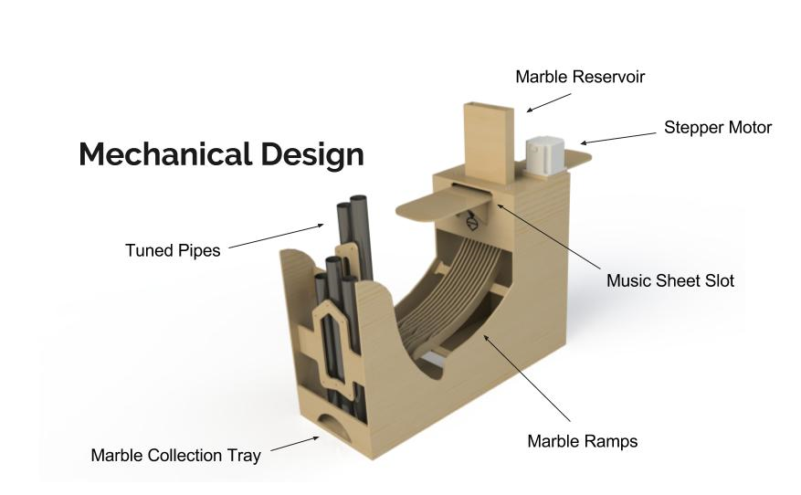
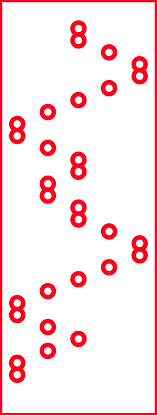
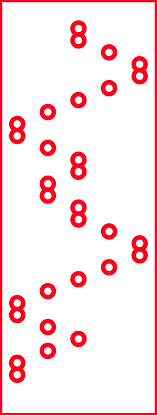

Sprint 2
Sprint Goals
- Stores songs using mechanical memory
- Feed marbles into mechanical memory
- Plays several tuned notes
After getting a good feel for our system in Sprint 1 we decided to pivot on a major design aspect of our machine, namely its actuation. As you can see in Sprint 1 we routed marbles with a servo that could open a gate and let a marble through. This is effective for example tune playing; however there are several limitations: many servos are required for a large range of notes, servos are severely limited in speed and therefore lack the temporal precision needed to play a song, and all the notes would have to be controlled by a computer rather than a microcontroller if you wanted to play multiple songs. So we decided to pivot. If the notes of the song were stored physically rather than in a computer, we could make our machine faster, more mechanically interesting, and more aesthetically pleasing.
Below, you can see our Sprint 2 prototype.

You’re probably wondering how it plays music. Well if you will refer to the images below, we’ll show you.
- Song Sheet: We designed a Python program to get a music MIDI files and convert it into a SVG that we can cut out to mechanically represent the song, as shown below.
- Marble Reservoir: Marbles are contained in the reservoir so that as the song sheet passes under it, they fall into the holes of the sheet.
- Free-Spinning Wheels: The wheels grip the side of the song sheet to slide it through the slot under the reservoir.
- Stepper Motor: The stepper motor will drive the song sheet so that it can be consistently fed into the slot. We went through a large amount of trial and error to get it to spin reliably, changing from using an Arduino Motor Shield, to an H Bridge Motor Driver, to an actual stepper motor driver.
- Marble Drop Holes: After the sheet passes the reservoir, it passes over the drop holes, where marbles in the sheet will fall towards ramps below.
- Marble Ramps: Marbles will enter ramps corresponding to each note, which will direct the marble to the correct pipe.
- Tuned Pipe: The marbles will bounce off the pipe producing a note.
- Marble Collection Tray: After ricocheting off of the pipes, marbles are collected and routed towards the collection tray where they can be accessed for later use. 
 



Well, this was the intention of each mechanism. As in life, things do not always turn out the way you expect. Here’s Ode to Joy:
As you might notice from the video, our stepper motor is not where it is supposed to be. Also, there is string connected to a screw in our song sheet. As we discovered after fabrication, wheels, especially the one driven by the stepper motor, do not get enough grip on the song sheet to reliably move it. As a quick fix, we attached a string to the sheet and to the stepper to feed it through.